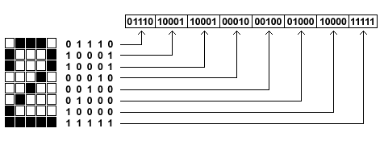

Graphics Routines - Sprites and BitmapsThe compass monitor uses sprites to store and display bitmaps. Sprites are used to display alpha-numeric characters as well as special graphics. This page only has the theory behind my implementation. If your'd like to see the actually 8052 assembly code please click here, and see the latest revision of raymon.asm for the LCD and graphics routines.Sprites are a rectangular set of pixels that make up a bitmap or part of an image. Sprites are defined by width and height, and the bits that make up the sprite. Following is an example 5x9 sprite for a '2':  Since the display I'm using has only two bit setting ON and OFF, each pixel can be represented by a binary 1 or 0. The sprite can thus be encoded as a set of 1's and 0's (see graphic). I needed to decide on an appropriate memory storage format. I decided to use the standard format that everybody else uses which is linear sprite format. This format uses a linear array in which the first character of the array stores the sprite's width and the second character stores the sprites height. After these first two bytes the sprites bits are stored as a one dimensional array. The conversion from a two-dimensional structure to a linear array is intuitive. You start with the first row (row number zero) and then concatenate the second row to its end. You then concatenate the third row to the end of the list, then the fourth row, etc. Actually you can either contenate the rows (row-majored) or concatentate the columns (column-majored). With the orientation I've writing to the LCD the row index (actually the column idex) is auto-incremented so to optimize writing to the display I opted to use row-majored arrays.
To store the data in program the linear arrow of bits must be broken into a word size
appropriate for the microcontroller which in the case of the 8051 is am 8-bit byte. The
graphic below shows how the linear array of bits is broken into 8-bit bytes and converted
to an array of decimal digits. It should be noted the at 40 bits that comprises this
sprite nicely divide by 8 to make 5 bytes. If an odd number of bits is encountered the
end of the array should be padded of 0's to the next multiple of eight, ie 8,16,24,32,...8*n
Each graphic and character to be used requires its own sprite stored in memory. Using 5x7 pixel characters, the entire ASCII character set can be represented using 5*128=640 bytes. Writing sprites to the display requires writing out the rows of the bitmap. The bits offset of any individual row is easily calculated using:
Dividing the bit offset by 8 yields the first byte in the array in stored memory with that row's bits, handily the remainder of this division is the number of left rotates to bring the start of the row into alignment. It must be remembered that a row may be longer than 8 bits so it may be necessary to read multiple bytes from stored memory.
Raymond E. Marcil Last modified: Sat Mar 27 18:18:12 AKST 1999 |